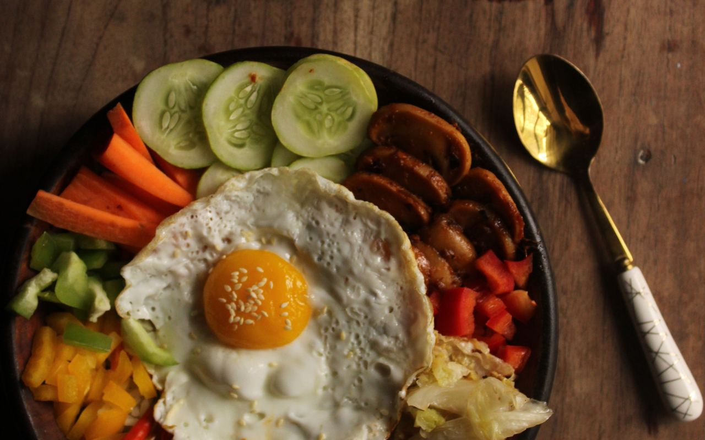
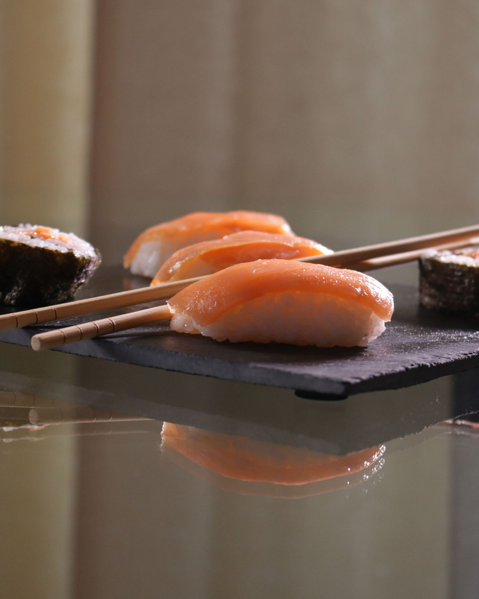

Sushi & asiatiskt · Torsgatan
Bibimbap
Gästernas favorit – plus färsk sushi, yakiniku och thai, lagat från grunden nära Centralen.
Ring & beställ★ 4,7 av 5 · 160+ omdömen på GoogleFavoriter på menyn
Fråga om hela menyn och dagens priser – ring 08-684 421 72.
Bibimbap
Koreansk risskål med grönsaker och stekt ägg.
Yakiniku
Grillat kött med söt-salt glaze.
Sushi
Nigiri och maki med färsk fisk.
Misosoppa
Värmande klassiker.
Röd curry
Krämig curry med kokosmjölk.
Cashewkyckling
Wokad kyckling med cashewnötter.
Om oss
Litet ställe, stor smak
Bang Sushi är ett personligt kvarterskök på Torsgatan där maten lagas med omsorg från beställning till tallrik – rejäla portioner att äta på plats eller ta med.

Öppettider
| Måndag – fredag | 11:00 – 21:30 |
| Lördag – söndag | 12:00 – 20:30 |
Torsgatan 7B, 111 23 Stockholm
Vasastan · nära Centralen
08-684 421 72